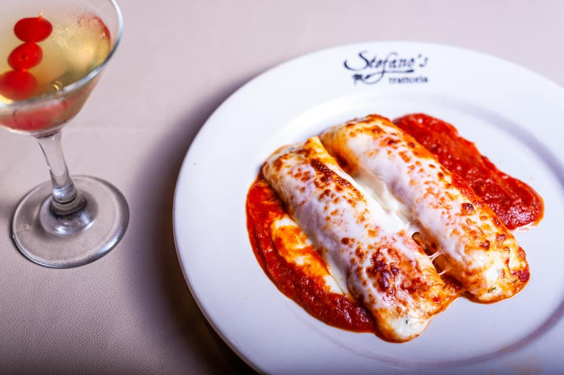
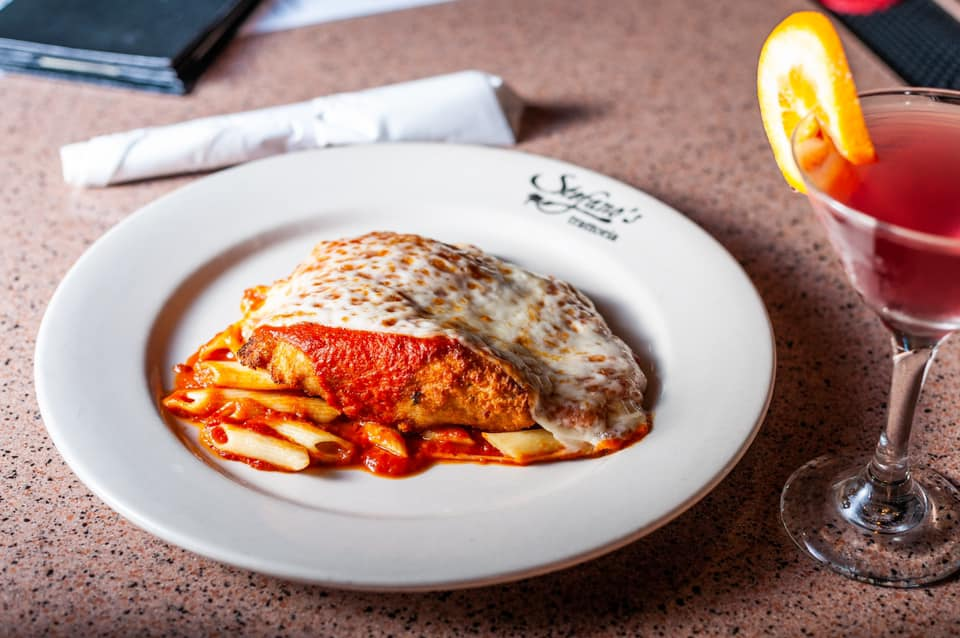

Lunch Special
Lunch that's twice as nice! Just $8.00
Antipasti - Starters

Bruschetta Siciliana
Toasted Italian bread topped with marinated tomatoes $ 8.00
Calamari Fritti
Flour battered deep fried seasoned squid $ 10.00
Insalata Di Calamari
Squid with celery, onions and kalamata olives, marinated in garlic olive oil vinaigrette served cold $ 10.00
Caponata Siciliana Toasted
Italian bread topped with eggplants, green olives, celery, onions and capers, marinated in a sweet and sour sauce $ 8.00
Pomodori Caprese
Sliced tomatoes and fresh mozzarella topped with olive oil and fresh basil $ 9.00Cozze Marinara
Sautéed mussels in garlic and tomato sauce $ 10.00
Cozze Bianco
Sautéed mussels with capers, onions and garlic in white wine sauce $ 10.00
Mozzarella Fritta
Deep fried breaded cheese sticks $ 8.00
Antipasto Contadina
Chunks of salami, sopresato, prosciutto, sharp provolone cheese, sun dried tomatoes, artichokes. mushrooms, black and green olives and anchovies, marinated in a seasoned olive oil $ 13.00
Insalata - Salads
Add chicken to any Salad $3.00
Dinner Salad
Crisp mixed greens with tomatoes, cucumbers and onions with your choice of dressing $ 4.00
Tri-Color Salad
Crisp romaine lettuce with tomatoes, fresh mozzarella and sliced almonds, in gorgonzola balsamic vinaigrette dressing $ 10.00
Greek Salad
Crisp mixed greens served with imported feta cheese, kalamata olives, tomatoes, cucumbers,pepperoncini peppers and onions topped with homemade house dressing $ 9.00
Stefano's Antipasto Salad
Crisp mixed greens served with Genoa salami, ham, pepperoni, cappicolla, provolone, artichokes, mushroom, tomatoes, cucumbers, pepperoncini peppers, black and green olives and onions topped with our homemade house dressing $ 12.00
Caesar Salad
Crisp romaine lettuce with croutons and pecorino romano cheese topped with creamy caesar dressing $ 9.00

Antonella Bella
Spinach and romaine lettuce with candied pecans, gorgonzola, raisins, topped with a homemade balsamic dressing $ 9.00
Piatti Al Forno - Oven Baked Entrees
Penne Al Forno
Baked ziti $ 13.00
Manicotti
Tube-filled pasta stuffed with cheese in a tomato sauce, topped with mozzarella $ 12.00
Cannelloni
Tube-filled pasta stuffed with meat and cheese in a tomato sauce, topped with mozzarella $ 12.00
Cannelloni Florentine
Florentine tube-filled pasta stuffed with meat, spinach and cheese in a tomato sauce, topped with mozzarella $ 12.00
Lumache
Stuffed shells with cheese in tomato sauce, topped with mozzarella $ 13.00
Lasagna
Baked pasta sheets layered with cheese and meat sauce. topped with mozzarella $ 14.00
Giro Della Sicilia (Combo Platter)
Stuffed shell, manicotti, cannelloni and a meatball, baked in tomato sauce, topped with mozzarella $ 16.00
Melanzane Parmigiana)
Breaded eggplants baked in tomato sauce, topped with mozzarella $ 13.00
Melanzane Rolatini)
Breaded eggplant stuffed with ricotta cheese, baked in tomato sauce, topped with mozzarella $ 14.00
Melanzane Rolatini Florentine)
Breaded eggplant stuffed with ricotta cheese and spinach, baked in tomato sauce, topped with mozzarella $ 14.00
Specialita Della Casa - House Specials
Tortellini Di Stefano
Tortellini pasta in a creamy meat sauce with a touch of prosciutto, baked and topped with provolone cheese $ 15.00
Gnocchi Della Nonna
Baked in a tomato sauce with fresh mozzarella and parmesan cheese $ 14.00
Salsiccia Con Pepperoni
Sausage sautéed with onions and peppers in a light tomato sauce $ 16.00
Pollo Di Stefano
Strips of chicken with sliced sausage, mushrooms, prosciutto, pepperoncini and black olives, sauteed in a white wine lemon garlic sauce $ 17.00
Vitello E Gamberi Alla Maria
Veal cutlet and jumbo shrimp breaded and baked in tomato sauce topped with mozzarella $ 23.00
Pasta
Choose One: Penne, Spaghetti or Linguini
Marinara
Homemade tomato sauce $ 11.00
Polpetti
Homemade meatballs $ 13.00
Salsiccia
Italian sausage $ 13.00
Bolognese
Homemade meat sauce $ 13.00
Funghetti
Homemade meat sauce with mushrooms $ 14.00
Aglio & Olio
Fresh garlic and olive oil $ 13.00
Carbonara
Lite onions and prosciutto in homemade cream sauce $ 14.00
Boscaiola
Mushrooms and eggplants in tomato sauce $ 14.00
Penne Con Polio & Broccoli
Penne sauteed with chicken and broccoli in a fresh garlic olive oil sauce with a touch of romano $ 14.00
Penne Alla Romana
Lite onions, peas, mushroom and prosciutto in a sherry wine cream sauce $ 15.00
Fettuccini Alfredo
Homemade Alfredo sauce $ 14.00
Fettuccini Primavera
Mixed vegetables in a garlic olive oil sauce with a touch of romano $ 14.00
Gnocchi Piemontese
Homemade pink sauce $ 14.00
Ravioli
Filled with cheese, meat or spinach served in a homemade marinara sauce $ 14.00
Tortellini Alla Panna
Sautéed in homemade cream sauce with prosciutto $ 14.00
Pizza, Calzones, & Stromboli
All of our pizzas are 14″ and are made to order All listed toppings are below
Pizza Margerita
Mozzarella cheese with fresh basil and tomato sauce $ 10.00
Pizza Braccio Di Ferro
Mozzarella cheese with spinach, fresh garlic and fresh tomatoes $ 11.00
Pizza Bianca Neve
Mozzarella cheese, ricotta, fresh basil, fresh garlic and olive oil $ 11.00
Pizza Vegetarian
Mozzarella cheese with black olives, broccoli, spinach, green peppers, onions, mushrooms and tomato sauce $ 11.00

Pizza Quattro Gusti
Mozzarella cheese with ham, frankfurters, ground beef, sausage and tomato sauce $ 11.00
Calzone
Stuffed with ricotta cheese, mozzarella cheese and ham $ 10.00
Calzone Vegetarian
Stuffed with ricotta cheese, mozzarella cheese, broccoli, spinach, mushrooms, onions and black olives $ 11.00

Stromboli
Ham, sausage, and mozzarella $ 10.00

Lenny's Special Stromboli
Pepperoni, sausage, onions, green peppers and mushrooms $ 11.00
Steak Stromboli
Sliced steak, onions, mushroom, green peppers and mozzarella $ 11.00
Create Your Own
Ask your server for availability & pricing on certain toppings
Pepperoni • Sausage • Ground Beef • Ham • Wurstel (Frankfurter) • Prosciutto • Chicken • Eggplant • Steak • Pepperoncini • Onions • Mushrooms • Green Peppers • Red Peppers • Spinach • Broccoli • Black Olives • Green Olives • Sun Dried Tomatoes • Tomatoes • Garlic • Basil • Fresh Mozzarella • Extra Mozzarella • Feta Cheese Consumer Advisory: Consumption of undercooked meat, poultry, eggs. or seafood may increase the risk of food borne illnesses. Alert your server if you have special dietary requirements.
Pollo - Chicken
Pollo Alla Marsala
chicken medallions sautéed in a marsala wine sauce with mushrooms $ 16.00
Pollo Alla Scaloppine
Chicken medallions sautéed in a white wine sauce with mushrooms $ 16.00
Pollo Alla Parmigiana
Breaded chicken baked in marinara sauce topped with mozzarella cheese $ 16.00
Pollo Alla Piccata
Chicken medallions sautéed in a white wine lemon sauce with capers $ 16.00
Pollo Alla Cacciatore
Strips of chicken in a tomato sauce sautéed with carrots, celery. green peppers,onions, mushroom, garlic and green and black olives $ 17.00Polio Alla Bolognese
Breaded chicken topped with prosciutto and mozzarella cheese in a marsala wine with mushrooms $ 16.00
Polio Alla Milanese
Breaded chicken pan fried in olive oil and butter, with a side of french fries $ 16.00
Vitello - Veal
Vitello Alla Marsala
Veal medallions sautéed in a marsala wine sauce with mushrooms $ 17.00
Vitello Alla Scaloppine
Veal medallions sautéed in a white wine sauce with mushrooms $ 17.00
Vitello Alla Parmigiana
Breaded veal baked in marinara sauce topped with mozzarella cheese $ 17.00
Vitello Alla Piccata
Veal medallions sautéed in a white wine lemon sauce with capers $ 17.00
Vitello Alla Bolognese
Breaded veal topped with prosciutto and mozzarella cheese in a marsala wine with mushrooms $ 17.00
Vitello Alla Milanese
Breaded veal pan fried in olive oil and butter, with a side of french fries $ 17.00
Vitello Alla Pizziola
Veal medallions sautéed in a cherry wine tomato sauce with capers, pine nuts, onions. crushed green olives and black olives $ 17.00
Piatti Di Mare - From The Sea
Linguini Con Vongole
Clams (red or white sauce) $ 15.00
Linguini Calamari
Squid in garlic and tomato sauce $ 15.00
Linguini Con Cozze
Mussels in garlic and tomato sauce $ 15.00
Gamberi Parmigiana
Breaded jumbo shrimp oven baked in tomato sauce topped with mozzarella cheese served with a side of ziti marinara $ 18.00
Gamberi Cioppino
Jumbo shrimp with green peppers, black olives and onions in a tomato sauce over linguini $ 18.00
Gamberi Portofino
Jumbo shrimp with mushrooms sautéed in a garlic sherry wine cream sauce over linguini $ 18.00
Dentici' Genovese
Snapper sautéed in a light butter lemon sauce, with onions, capers, garlic, black olives and pine nuts over linguini $ 18.00
Dentici' Alla Barese
Snapper sautéed with onions, black olives, crushed red pepper and garlic, in a tomato sauce over linguini $ 18.00
Zuppa Di Mare Di Stefano
Stefano's seafood platter with shrimp, mussels, calamari, clams and snapper, deliciously simmered in a tomato sauce over linguini $ 25.00
Contorni - Side Items
Pane
Homemade bread with a side of seasoned garlic dipping sauce $ 2.00
Polpetti
Two meatballs $ 3.00
Salsiccia
Two sausages $ 3.00
Marinara Sauce
Side 1 pint $ 4.00
Alfredo Sauce
Side 2 pint $ 5.00
Meat Sauce
Side 2 pint $ 5.00
Broccoli Aglio Olio
Broccoli sautéed in garlic and olive oil $ 5.00
Mixed Vegetables
Zucchini, yellow squash, carrots, broccoli and peas $ 5.00
Kids Menu - Must Be Under 12
Kid’s Entrees Do Not Include Salad or Beverage Pasta Choices: Linguini, Spaghetti or Penne
Pasta With Butter
$ 4.00
Pasta With Marinara
$ 4.50
Pasta With Meatballs
$ 5.50
Pasta With Alfredo
$ 5.50
Baked Ziti
$ 5.50
Ravioli (Cheese Or Meat) Marinara
$ 5.50
Ravioli (Cheese Or Meat) Alfredo
$ 5.50
Fried Ravioli (Cheese Or Meat)<
$ 5.50
Chicken Tenders Served With Fries
$ 6.00
Bevende - Beverages
Fountain Drinks
$ 2.00
Coffee Regular Or Decaffeinated Milk
$ 2.00
Hot Tea Regular Or Decaffeinated
$ 2.00
Espresso Regular Or Decaffeinated
$ 2.00
Espresso Double Regular Or Decaf
$ 3.00
Cappuccino Regular Or Decaffeinated
$ 3.50
San Pellegrino Mineral Water
$ 4.00
Bottled Water
$ 2.00
Apple Juice
$ 2.00